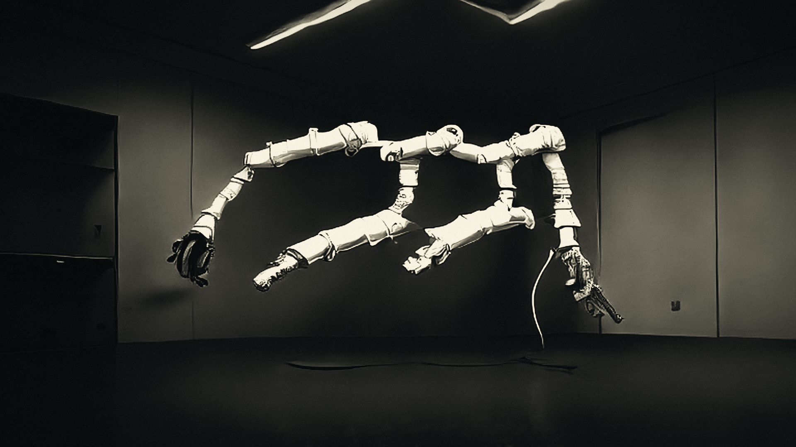
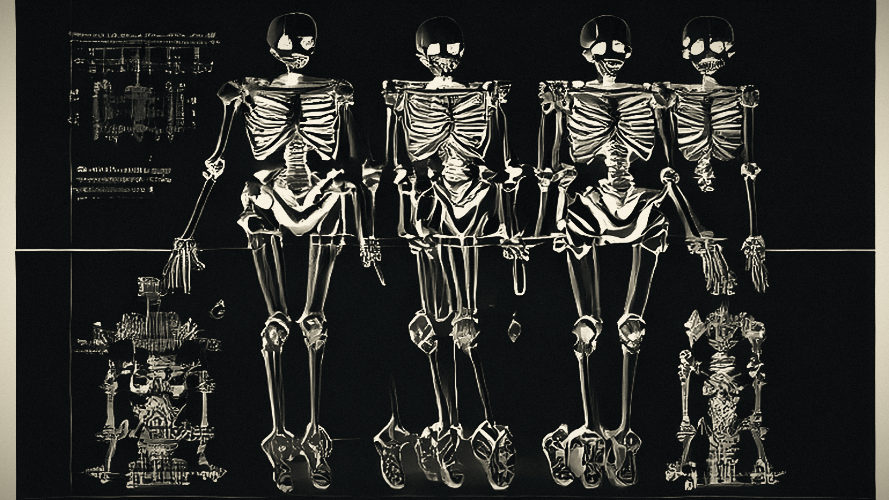
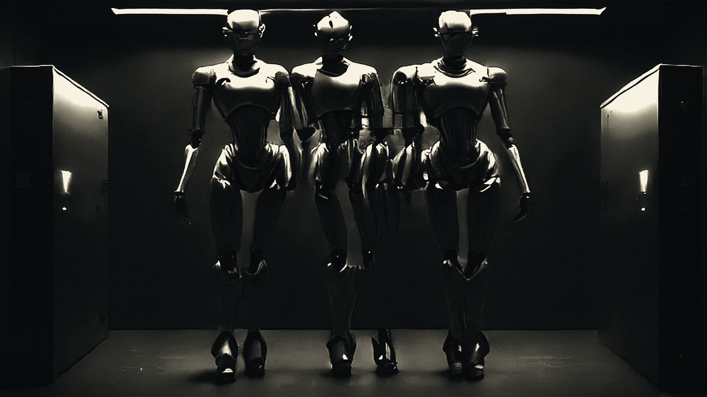

A robot hand reaches for a cup.
AR-1 · one attempt, followed all the way through




The reflex tries first.
1.5B parameters · 0.6 ms · every attempt is recorded
Then a separate verifier checks it.
2.1 ms · never told which tier made the motion · false accept ≤ 2%
Will the grip hold?
The push must stay inside the friction cone.
μ 0.60
φ = arctan μ = 31.0°
inside the cone: the grip holds
this attempt: outside → reject
If it passes, the hand moves.
It failed. Only now does the planner wake.
180 ms · it solves the failure, not the task
The failure is written down.
attempt + objection + pattern key → append-only ledger
Failure becomes reflex.
same task, next time: the reflex holds it
Why the gate can stay loose.
Every outcome pays: an answer, or training data.
pass, fail or abstain: every path leaves a record
illustrative rates · 75% attempted · p .7 · ρ .9 · α .05
answers 0
lessons 0
lessons 0

The bar to try is set low on purpose.
a cost inequality, not a confidence score
q > cS / cL
q* = 0.18
Below the bar, 5% still try (ε = 0.05), so nothing goes cold.

Reflex first.
Deliberation only on rejection.
Nothing exits the ledger.
archimedes-opal.vercel.app